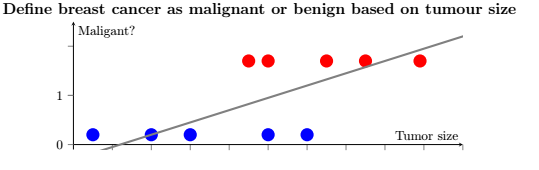
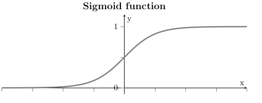
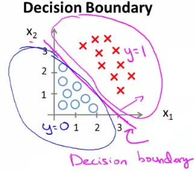
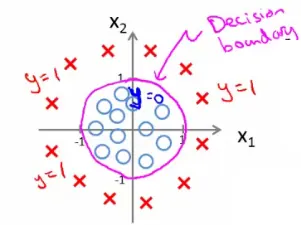
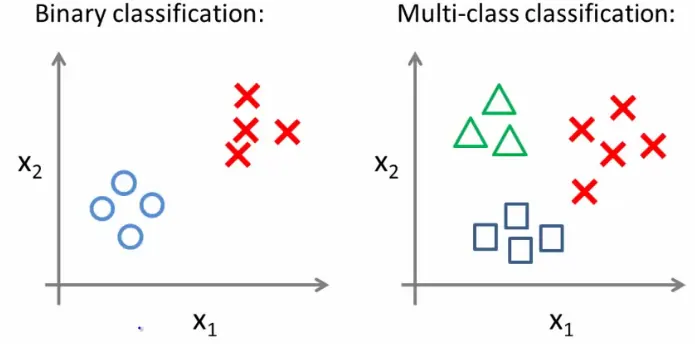
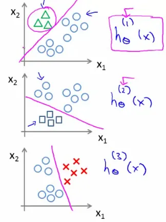

Logistic Regression
Logistic regression is a statistical method used for classification in machine learning. Unlike linear regression, which predicts continuous values, logistic regression models a conditional class probability. A separate decision rule turns that probability into a label, such as spam or non-spam.
Classification
Yields discrete values (e.g., 0 or 1, representing classes).
Examples:
- Email: Spam (1) or Not Spam (0).
- Online Transaction: Fraudulent (1) or Not Fraudulent (0).
- Tumor Diagnosis: Malignant (1) or Benign (0).
Logistic Regression vs Linear Regression
Applying linear regression to classification tasks, like cancer diagnosis, may not yield effective results, especially when the data doesn't fit well into a linear model.

Hypothesis Representation
- Classifier output should be between 0 and 1 (probability).
- Hypothesis $h_{\theta}(x) = g(\theta^Tx)$.
- $g(z)$ is the sigmoid or logistic function:
$$ g(z) = \frac{1}{1 + e^{-z}} $$
Hypothesis Equation:
$$ h_{\theta}(x) = \frac{1}{1+e^{-\theta^Tx}} $$
- The output of $h_{\theta}(x)$ is interpreted as the probability of the positive class given the input $x$. $$ h_{\theta}(x) = P(y=1|x\ ;\ \theta) $$
- Example: A fitted value of 0.7 is the model's estimated positive-class probability. Whether predictions near 0.7 correspond to about 70% positives is a calibration question assessed with suitable held-out data.
Sigmoid Function
Visualizes how $h_{\theta}(x)$ translates a linear combination of inputs into a probability:

Decision Boundary in Logistic Regression
The decision boundary in logistic regression is critical for classification tasks. It separates the different classes based on the probability calculated using the sigmoid function.
Linear Decision Boundary
- Principle: Here the rule predicts $y=1$ for probability at least 0.5 and $y=0$ otherwise; a tie at 0.5 is assigned consistently to the positive class.
- Hypothesis: $h_{\theta}(x) = g(\theta^T x)$, where $g$ is the sigmoid function.
- Predicting $y = 1$: Occurs when $\theta^T x \geq 0$.
- Predicting $y = 0$: Under that rule, occurs when $\theta^Tx<0$.
Example of a Linear Decision Boundary
Hypothesis:
$$ h_{\theta}(x) = g(\theta_0 + \theta_1x_1 + \theta_2x_2) $$
Theta Vector:
$$ \theta = \begin{bmatrix} -3 \\ 1 \\ 1 \end{bmatrix} $$
Condition for $y = 1$:
$$ -3 + x_1 + x_2 \geq 0 $$
Hence, the decision boundary is a straight line: $x_2 = -x_1 + 3$.

Here's the Python implementation:
import numpy as np
import matplotlib.pyplot as plt
# Sigmoid function
def sigmoid(z):
return 1 / (1 + np.exp(-z))
# Hypothesis function
def hypothesis(theta, X):
return sigmoid(np.dot(X, theta))
# Predict function
def predict(theta, X):
return hypothesis(theta, X) >= 0.5
# Define the theta vector
theta = np.array([-3, 1, 1])
# Define the range for x1 and compute the corresponding x2 for the decision boundary
x1_vals = np.linspace(0, 5, 100)
x2_vals = -x1_vals + 3
# Plotting the decision boundary
plt.plot(x1_vals, x2_vals, label=r'$x_2 = -x_1 + 3$')
plt.xlim(0, 5)
plt.ylim(0, 5)
plt.xlabel(r'$x_1$')
plt.ylabel(r'$x_2$')
plt.title('Linear Decision Boundary')
plt.legend()
plt.grid(True)
plt.show()Non-linear Decision Boundaries
- Purpose: To fit more complex, non-linear datasets.
- Approach: Introduce polynomial terms in the hypothesis.
Example of a Non-linear Decision Boundary
Hypothesis:
$$ h_{\theta}(x) = g(\theta_0 + \theta_1x_1 + \theta_2x_1^2 + \theta_3x_2^2) $$
Theta Vector:
$$ \theta = \begin{bmatrix} -1 \\ 0 \\ 1 \\ 1 \end{bmatrix} $$
Condition for $y = 1$:
$$ x_1^2 + x_2^2 \geq 1 $$
This forms a circular decision boundary with radius 1 around the origin: $x_1^2 + x_2^2 = 1$.

Here's the Python implementation:
import numpy as np
import matplotlib.pyplot as plt
# Sigmoid function
def sigmoid(z):
return 1 / (1 + np.exp(-z))
# Hypothesis function for non-linear decision boundary
def hypothesis(theta, X):
# Compute the polynomial terms
poly_terms = np.dot(X, theta)
return sigmoid(poly_terms)
# Predict function
def predict(theta, X):
return hypothesis(theta, X) >= 0.5
# Define the theta vector
theta = np.array([-1, 0, 1, 1])
# Generate a grid of values for x1 and x2
x1_vals = np.linspace(-2, 2, 400)
x2_vals = np.linspace(-2, 2, 400)
x1, x2 = np.meshgrid(x1_vals, x2_vals)
# Compute the decision boundary condition
decision_boundary = theta[0] + theta[1] * x1 + theta[2] * x1**2 + theta[3] * x2**2
# Plot the decision boundary
plt.contour(x1, x2, decision_boundary, levels=[0], linewidths=2, colors='red')
plt.xlim(-2, 2)
plt.ylim(-2, 2)
plt.xlabel(r'$x_1$')
plt.ylabel(r'$x_2$')
plt.title('Non-linear Decision Boundary')
plt.grid(True)
plt.gca().set_aspect('equal', adjustable='box')
plt.show()Cost Function for Logistic Regression
Logistic regression uses a different cost function compared to linear regression, tailored to the classification setting.
Training Set Representation
Consider a training set of $m$ examples:
$$ \{(x^{(1)}, y^{(1)}), ..., (x^{(m)}, y^{(m)})\} $$
where
$$ x = \begin{bmatrix} x_0 \\ x_1 \\ ... \\ x_n \end{bmatrix} $$
with $x_0 = 1$ and $y$ being either 0 or 1.
Linear Regression Cost Function
In linear regression, the cost function $J(\theta)$ is defined as:
$$ J(\theta) = \frac{1}{2m} \sum_{i=1}^{m}(h_{\theta}(x^{(i)}) - y^{(i)})^2 $$
Defining Cost for Logistic Regression
If we apply squared error to the sigmoid prediction, the per-example loss would be:
$$ cost(h_{\theta}(x^{(i)}), y^{(i)}) = \frac{1}{2} (h_{\theta}(x^{(i)}) - y^{(i)})^2 $$
Redefining $J(\theta)$:
$$ J(\theta) = \frac{1}{m} \sum_{i=1}^{m}cost(h_{\theta}(x^{(i)}), y^{(i)}) $$
As a function of the coefficients, squared error composed with a sigmoid is generally nonconvex. The Bernoulli negative log-likelihood below instead gives a convex objective for a fixed linear feature map.
Logistic Regression Cost Function
The logistic regression cost function is defined as:
$$ cost(h_{\theta}(x), y) = \begin{cases} -\log(h_{\theta}(x)) & \text{if } y=1 \\ -\log(1 - h_{\theta}(x)) & \text{if } y=0 \end{cases} $$
Then, the overall cost function $J(\theta)$ becomes:
$$J(\theta) = \frac{1}{m} \sum_{i=1}^{m}[-y^{(i)}\log(h_{\theta}(x^{(i)})) - (1-y^{(i)})\log(1 - h_{\theta}(x^{(i)}))] $$
Gradient of the Cost Function
The gradient of $J(\theta)$ for logistic regression is:
$$ \frac{\partial}{\partial \theta_j} J(\theta) = \frac{1}{m} \sum_{i=1}^{m} (h_{\theta}(x^{(i)}) - y^{(i)})x_j^{(i)} $$
Note: While this gradient looks identical to that of linear regression, the formulae differ due to the different definitions of $h_{\theta}(x)$ in linear and logistic regression.
Here's the Python implementation:
import numpy as np
# Sigmoid function
def sigmoid(z):
return 1 / (1 + np.exp(-z))
# Hypothesis function
def hypothesis(theta, X):
return sigmoid(np.dot(X, theta))
# Cost function for logistic regression
def compute_cost(theta, X, y):
m = len(y)
h = hypothesis(theta, X)
z = X @ theta
cost = np.mean(np.logaddexp(0.0, z) - y * z)
return cost
# Gradient of the cost function
def compute_gradient(theta, X, y):
m = len(y)
h = hypothesis(theta, X)
gradient = (1 / m) * np.dot(X.T, (h - y))
return gradient
# Example usage
if __name__ == "__main__":
# Sample data (X should include the intercept term)
X = np.array([[1, 0.5, 1.5],
[1, 1.5, 0.5],
[1, 3, 3.5],
[1, 2, 2.5]])
y = np.array([0, 0, 1, 1])
# Initial theta
theta = np.array([0, 0, 0])
# Compute cost and gradient
cost = compute_cost(theta, X, y)
gradient = compute_gradient(theta, X, y)
print("Cost:", cost)
print("Gradient:", gradient)In the example usage, we define a small sample dataset with features $X$ and labels $y$, initialize the theta vector, and compute both the cost and the gradient. The computed cost and gradient are printed out for inspection.
Multiclass Classification Problems
Logistic regression can be extended to handle multiclass classification problems through the "one-vs-all" (or "one-vs-rest") method.
One-vs-All Approach
The one-vs-all strategy involves training multiple binary classifiers, each focused on distinguishing one class from all other classes.
Visualization of Multiclass Classification
Consider a dataset with three classes: triangles, crosses, and squares.

Implementing One-vs-All
The process involves splitting the training set into separate binary classification problems:
- Triangle vs Others: Train a classifier $h_{\theta}^{(1)}(x)$ to distinguish triangles (1) from crosses and squares (0).
- Crosses vs Others: Train another classifier $h_{\theta}^{(2)}(x)$ to distinguish crosses (1) from triangles and squares (0).
- Squares vs Others: Lastly, train a classifier $h_{\theta}^{(3)}(x)$ to distinguish squares (1) from crosses and triangles (0).

To implement the One-vs-All (OvA) approach for multi-class classification, we need to train separate binary classifiers for each class, treating each class as the positive class and all others as the negative class. Here is the step-by-step implementation:
import numpy as np
from scipy.optimize import minimize
# Sigmoid function
def sigmoid(z):
return 1 / (1 + np.exp(-z))
# Hypothesis function
def hypothesis(theta, X):
return sigmoid(np.dot(X, theta))
# Cost function for logistic regression
def compute_cost(theta, X, y):
m = len(y)
h = hypothesis(theta, X)
z = X @ theta
cost = np.mean(np.logaddexp(0.0, z) - y * z)
return cost
# Gradient of the cost function
def compute_gradient(theta, X, y):
m = len(y)
h = hypothesis(theta, X)
gradient = (1 / m) * np.dot(X.T, (h - y))
return gradient
# One-vs-All training function
def one_vs_all(X, y, num_labels, lambda_=0.1):
m, n = X.shape
all_theta = np.zeros((num_labels, n + 1))
# Add intercept term to X
X = np.hstack((np.ones((m, 1)), X))
# Train each classifier
for c in range(num_labels):
initial_theta = np.zeros(n + 1)
options = {'maxiter': 500}
target = (y == c).astype(int)
def objective(theta):
return compute_cost(theta, X, target) + lambda_ * np.sum(theta[1:]**2)/(2*m)
def gradient(theta):
penalty = theta.copy()
penalty[0] = 0.0
return compute_gradient(theta, X, target) + lambda_*penalty/m
result = minimize(objective, initial_theta, method='L-BFGS-B', jac=gradient, options=options)
if not result.success:
raise RuntimeError(result.message)
all_theta[c] = result.x
return all_theta
# Prediction function for One-vs-All
def predict_one_vs_all(all_theta, X):
m = X.shape[0]
X = np.hstack((np.ones((m, 1)), X))
predictions = hypothesis(all_theta.T, X)
return np.argmax(predictions, axis=1)
# Example usage
if __name__ == "__main__":
# Sample data (X should include the intercept term)
X = np.array([[0.5, 1.5],
[1.5, 0.5],
[3, 3.5],
[2, 2.5],
[1, 1],
[3.5, 4],
[2.5, 3],
[1, 0.5]])
y = np.array([0, 0, 1, 1, 2, 2, 1, 0]) # 0: Triangle, 1: Cross, 2: Square
# Train One-vs-All classifiers
num_labels = 3
all_theta = one_vs_all(X, y, num_labels)
# Make predictions
predictions = predict_one_vs_all(all_theta, X)
print("Predictions:", predictions)
print("Actual labels:", y)- We define a small sample dataset with features $X$ and labels $y$.
- The
one_vs_allfunction trains the classifiers. - The
predict_one_vs_allfunction makes predictions on the dataset.
Classification Decision
- When classifying a new example, compute the probability that it belongs to each class using the respective classifiers.
- The largest one-vs-rest score determines the predicted class. Separate sigmoid probabilities need not sum to one; multinomial softmax is a different joint probability model.
Derive the Loss from a Bernoulli Model
For binary target y and model probability $p=\sigma(z)$, the likelihood is $p^y(1-p)^{1-y}$. Taking a negative logarithm gives $-y\log p-(1-y)\log(1-p)$. Substituting $p=e^z/(1+e^z)$ simplifies it to
$$ \ell(z,y)=\log(1+e^z)-yz. $$
The derivative with respect to z is $\sigma(z)-y$. The chain rule with $z=x^\top\theta$ produces $(p-y)x$. This cancellation is specific to sigmoid activation combined with Bernoulli cross-entropy; multiplying by another sigmoid derivative would give the wrong gradient for this loss.
The Hessian of average loss is $X^\top D X/m$, with diagonal $D_{ii}=p_i(1-p_i)\geq0$. It is positive semidefinite, explaining convexity. A finite unregularized optimum is a separate question: completely separable data can keep reducing their loss as coefficient magnitudes grow without bound.
Worked Calculation and an Independent Fit
Use inputs $-2,-1,1,2$ with labels $0,1,0,1$. They cannot be separated by a one-dimensional threshold. At zero intercept and slope, every probability is one half, average loss is $\log2$, and the intercept derivative is zero. The slope derivative is
$$ \frac14\{(-2)(0.5)+(-1)(-0.5)+(1)(0.5)+(2)(-0.5)\} =-\frac14. $$
The fitted intercept is approximately zero by symmetry, the slope approximately 0.419618, and minimized average loss about 0.641953. These are probability estimates for a small constructed dataset, rather than perfect label predictions.
import numpy as np
from scipy.optimize import minimize
from scipy.special import expit
from sklearn.linear_model import LogisticRegression
from sklearn.metrics import log_loss
x = np.array([-2.0, -1.0, 1.0, 2.0])
y = np.array([0.0, 1.0, 0.0, 1.0])
X = np.column_stack([np.ones(4), x])
def objective(theta):
z = X @ theta
return np.mean(np.logaddexp(0.0, z) - y * z)
def gradient(theta):
return X.T @ (expit(X @ theta) - y) / len(y)
theta0 = np.zeros(2)
np.testing.assert_allclose(objective(theta0), np.log(2.0))
np.testing.assert_allclose(gradient(theta0), [0.0, -0.25])
epsilon = 1e-05
numerical = np.array([(objective(theta0 + epsilon * e) - objective(theta0 - epsilon * e)) / (2 * epsilon) for e in np.eye(2)])
np.testing.assert_allclose(gradient(theta0), numerical, atol=1e-09)
result = minimize(objective, theta0, jac=gradient, method='BFGS', options={'gtol': 1e-10})
library = LogisticRegression(C=100000000.0, solver='lbfgs', tol=1e-12, max_iter=2000).fit(x[:, None], y)
probability = expit(X @ result.x)
np.testing.assert_allclose(probability, library.predict_proba(x[:, None])[:, 1], atol=1e-06)
np.testing.assert_allclose(objective(result.x), log_loss(y, probability))
assert np.linalg.norm(gradient(result.x)) < 1e-07
extreme_z = np.array([-1000.0, 1000.0])
assert np.isfinite(np.logaddexp(0.0, extreme_z)).all()
print('initial gradient:', gradient(theta0))
print('fitted coefficients:', np.round(result.x, 8), 'loss:', round(result.fun, 8))The finite differences check the analytic gradient. A separate optimizer fits that implemented loss. Scikit-learn uses a very large C, making its L2 penalty negligible for this finite, nonseparable example; probabilities are compared within a tolerance. The metric implementation supplies an additional check of the loss value.
For extreme logits, computing a sigmoid followed by logarithms can produce rounded probabilities of zero or one. NumPy's logaddexp evaluates $\log(1+e^z)$ without directly overflowing $e^z$. A confidently correct logit near a thousand can then have finite near-zero loss, while a confidently wrong logit has large finite loss.
A Threshold Encodes a Decision
With threshold t, the positive-class rule becomes $z\geq\log(t/(1-t))$. At $t=0.5$ the cutoff is zero; at $t=0.8$ it is $\log4\approx1.3863$. Changing the threshold changes the decision without refitting the probability model.
If a false positive costs $c_{\mathrm{FP}}$ and a false negative costs $c_{\mathrm{FN}}$, calibrated probabilities minimize conditional expected cost by predicting positive when
$$ c_{\mathrm{FP}}(1-p)\leq c_{\mathrm{FN}}p, \qquad p\geq\frac{c_{\mathrm{FP}}}{c_{\mathrm{FP}}+c_{\mathrm{FN}}}. $$
The calculation requires the relevant costs and probabilities for the deployment population. A validation-selected threshold must be fixed before final test assessment. Good ranking, accurate probabilities, and a useful binary decision are related but distinct questions.
Reference
These notes are based on the free video lectures offered by Stanford University, led by Professor Andrew Ng. These lectures are part of the renowned Machine Learning course available on Coursera. For more information and to access the full course, visit the Coursera course page.